1. A solid is in the shape of a cone standing on a hemisphere with both their radii being
equal to 1 cm and the height of the cone is equal to its radius. The volume of the solid is:

(a) π cm³
(b) 2π cm³
(c) 3π cm³
(d) 4π cm³
Answer: (a) π cm³
Vol = (1/3)πr²h + (2/3)πr³ = π.
2. Combining two cubes of side 'a' end to end results in a cuboid with surface area:

(a) 12a²
(b) 10a²
(c) 8a²
(d) 6a²
Answer: (b) 10a²
L=2a, B=a, H=a. SA = 2(2a² + a² + 2a²) = 10a².
3. A cylindrical pencil sharpened at one end is combination of:

(a) a cone and a cylinder
(b) frustum of a cone and a cylinder
(c) a hemisphere and a cylinder
(d) two cylinders
Answer: (a) a cone and a cylinder
Visual check.
4. A surahi is the combination of:

(a) a sphere and a cylinder
(b) a hemisphere and a cylinder
(c) two hemispheres
(d) a cylinder and a cone
Answer: (a) a sphere and a cylinder
Usually a spherical bottom with long cylindrical neck.
5. A plumbline (sahul) is the combination of:

(a) a cone and a cylinder
(b) a hemisphere and a cone
(c) frustum of a cone and a cylinder
(d) sphere and cylinder
Answer: (b) a hemisphere and a cone
Visual check.
6. The shape of a gilli, in the gilli-danda game, is a combination of:

(a) two cylinders
(b) a cone and a cylinder
(c) two cones and a cylinder
(d) two cylinders and a cone
Answer: (c) two cones and a cylinder
Cylinder in middle, cones at ends.
7. A shuttle cock used for playing badminton has the shape of the combination of:

(a) a cylinder and a sphere
(b) a sphere and a cone
(c) a cylinder and a hemisphere
(d) frustum of cone and a hemisphere
Answer: (d) frustum of cone and a hemisphere
Technically frustum, but if rationalized syllabus removed frustum, this might be tricky.
However, it IS a frustum. If simple approximation, maybe cylinder+hemi? But standard answer is D.
8. A medicine capsule is in the shape of a cylinder of diameter 0.5 cm with two
hemispheres stuck to each of its ends. The length of entire capsule is 2 cm. The capacity of the capsule is:

(a) 0.36 cm³
(b) 0.35 cm³
(c) 0.34 cm³
(d) 0.33 cm³
Answer: (a) 0.36 cm³
r = 0.25. H = 2. h_cyl = 1.5.
Vol = πr²(h + 4r/3) = 3.14(0.0625)(1.5 + 0.33) ≈ 0.36.
9. If two solid hemispheres of same base radius r are joined together along their bases,
then curved surface area of this new solid is:

(a) 4πr²
(b) 6πr²
(c) 3πr²
(d) 8πr²
Answer: (a) 4πr²
Forms a sphere. CSA = 4πr².
10. Volume of a bird-bath which consists of a cylinder with a hemispherical depression at
one end, with height h and radius r, is:

(a) πr²h + (2/3)πr³
(b) πr²h - (2/3)πr³
(c) πr²h - (4/3)πr³
(d) None of these
Answer: (b) πr²h - (2/3)πr³
Cylinder minus Hemisphere volume (if depression implies removal). If capacity of bowl, it is
just hemi volume. But usually "Volume of solid remaining" or if it is a container, capacity. If bird bath is
the container, capacity is 2/3 pi r^3. If it means volume of material used: Cylinder - Hemi. Let's assume
material.